2.1 Conceptos básicos sobre virtualización¶
Módulo: ASIR – Implantación de Sistemas Operativos
Centro: IES El Caminàs
Objetivos
Adquirir los conocimientos básicos sobre virtualización.
📑 Contenidos¶
- Definición
- Máquinas virtuales de sistema
- Software de virtualización
- Virtualización en la nube
- Ventajas e inconvenientes
- IaaS, PaaS y SaaS
- AWS, Azure y Google Cloud
1. Definición¶
¿Qué son?¶
- Programa que simula un PC.
- Se pueden ejecutar programas sobre ese "PC virtual" como si fuese hardware real.
- Procesos limitados: no pueden ejecutarse fuera de la máquina virtual.
- Permiten ejecutar varios sistemas operativos sin que interfieran entre ellos (particionamiento, sector de arranque, etc.).
¿Qué es una máquina virtual? (I)¶
- Es un SOFTWARE que podemos instalar en cualquier ordenador.
- Este software crea un entorno virtual que EMULA el hardware de un ordenador.
- Podemos CREAR tantos ordenadores como necesitemos.
- Cada ORDENADOR VIRTUAL ejecuta SU PROPIO sistema operativo y las aplicaciones que instalemos en él.
¿Qué es una máquina virtual? (II)¶
Uno de los usos domésticos más extendidos es probar sistemas operativos. Por ejemplo, podemos ejecutar Windows desde nuestro Linux habitual sin instalarlo directamente en el equipo y sin miedo a que se "desconfigure" el sistema operativo principal.
Concepto de HOST (anfitrión)¶
El HOST ANFITRIÓN es el ordenador físico en el que instalamos VirtualBox o cualquier otro software de virtualización.
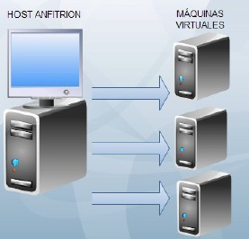
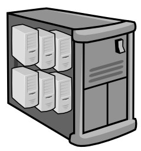
Note
Solo disponemos de un HOST anfitrión.
Concepto de GUEST (invitado)¶
Cada ordenador virtual que creamos mediante el software de virtualización.
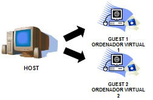
Note
Disponemos de tantos GUEST como máquinas virtuales creemos. El límite lo ponen los recursos del anfitrión.
Recursos compartidos¶
Cada GUEST comparte los recursos hardware con el HOST:
| Recurso | Ejemplo |
|---|---|
| 🧠 Memoria RAM | Módulos DDR |
| 💾 Disco duro | HDD / SSD |
| ⚙️ Procesador | CPU Intel / AMD |
| 🖥️ Tarjeta gráfica | GPU |
| 🌐 Tarjeta de red | NIC |
| 📀 Otros dispositivos | DVD/CD-ROM, disquetera, USB… |
¿Cómo funciona realmente?¶
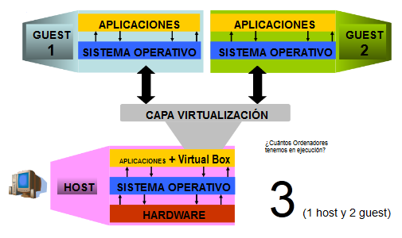
¿Cuántos ordenadores tenemos en ejecución? → 3 (1 host + 2 guest).
✅ Ventajas¶
- Independencia: una máquina virtual no depende del hardware ni del sistema operativo del HOST sobre el que se ejecuta. Se puede mover entre equipos distintos.
- Mejor aprovechamiento del HOST: el hardware actual es muy potente, así que un único servidor físico puede alojar varios servicios:
- GUEST 1 → Servidor de archivos
- GUEST 2 → Servidor de bases de datos
- GUEST 3 → Servidor de correo
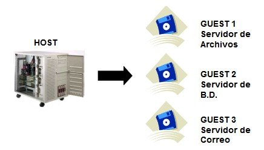
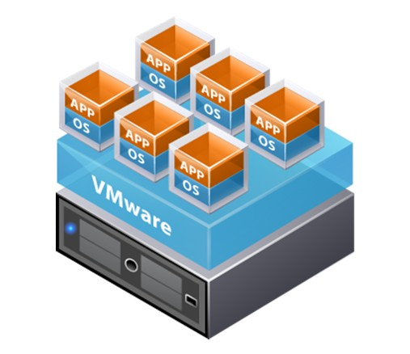
- Control del estado: una MV se puede encender (Power On), reiniciar (Reset), suspender (Suspend) y apagar (Power Off).
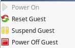
- Al suspender, se guarda en un fichero el contenido de la memoria y se apaga.
- Al reanudar, se recupera la memoria desde ese fichero y continuamos en el mismo estado en que estábamos.
❌ Desventajas¶
- Cuantos más sistemas virtualizados queramos tener, más recursos y potencia necesita el sistema anfitrión.
- Los factores que determinan cuántas MV se pueden soportar y su rendimiento son principalmente:
- Cantidad y velocidad de la memoria RAM.
- Potencia del procesador.
- Velocidad de lectura, acceso y transferencia del disco duro.
- En ocasiones pueden aparecer problemas de compatibilidad con el hardware virtualizado (aunque en las versiones actuales casi no ocurre).
2. Máquinas virtuales de sistema¶
El hardware subyacente ejecuta varias máquinas virtuales, cada una con su propio sistema operativo y su propio hardware virtual (CPU, disco, red y memoria).
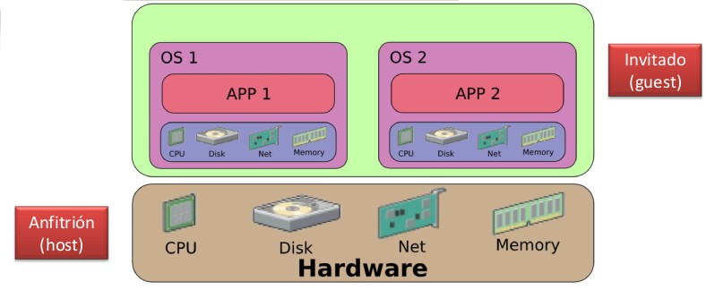
Tipo I — Directamente sobre el hardware (bare metal)¶
El hipervisor está incrustado en un sistema operativo muy ligero, de forma que los recursos físicos se aprovechan casi en su totalidad por los sistemas virtualizados.
Ejemplos: VMware vSphere ESXi, Proxmox.
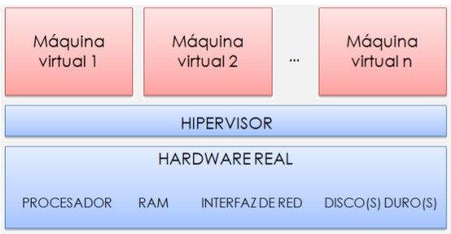
Ejemplo de uso (Proxmox): desde la interfaz web se gestionan las máquinas virtuales y contenedores (iniciar, parar, abrir consola, migrar, ver uso de CPU/memoria, etc.).
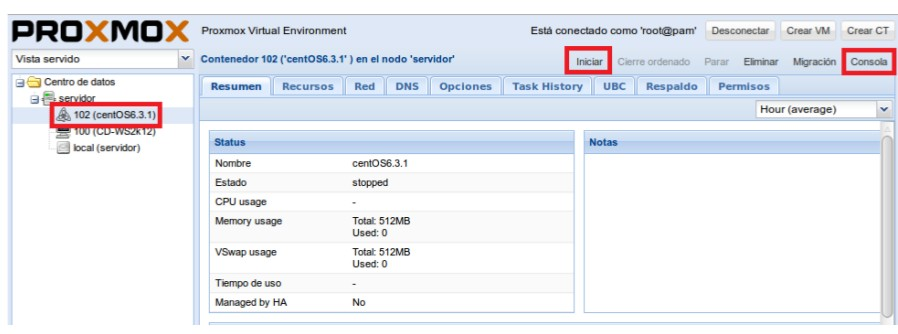
Arquitectura típica:
- Uno o varios servidores de virtualización.
- Un cliente de gestión vía web que se conecta por red.
- En entornos de alta disponibilidad debe haber más de un servidor (normalmente 3).
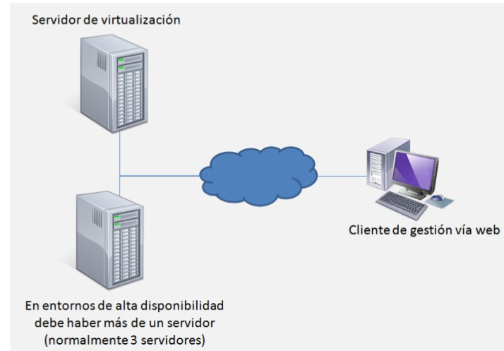
Tipo II — Sobre otro sistema operativo (hosted)¶
El hipervisor es un programa más que se ejecuta dentro del sistema operativo instalado.
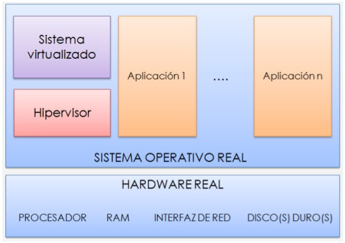
Ejemplos: VirtualBox, VMware Workstation / Player, Parallels.
Comparativa rápida Tipo I vs Tipo II¶
| Característica | Tipo I (bare metal) | Tipo II (hosted) |
|---|---|---|
| Se instala sobre | El hardware directamente | Un sistema operativo existente |
| Rendimiento | Muy alto | Menor (capa extra del SO) |
| Uso típico | Servidores, CPD, producción | Pruebas, formación, escritorio |
| Ejemplos | ESXi, Proxmox, Hyper-V, Xen | VirtualBox, VMware Workstation, Parallels |
Hyper-V¶
- Hipervisor de tipo 1 de Microsoft, integrado en Windows Server desde la versión 2008 hasta la actual, Windows Server 2025 (se activa como un rol desde el Administrador del servidor).
- También está disponible como característica opcional en las ediciones Pro, Enterprise y Education de Windows 10 y Windows 11.
- En funcionalidad y capacidades compite con VMware vSphere y Proxmox VE, y está por encima de hipervisores de tipo 2 como VirtualBox.
- Distingue dos tipos de máquina virtual: generación 1 (BIOS, hardware emulado) y generación 2 (UEFI, arranque seguro), que es la opción por defecto desde Windows Server 2025.
- La versión de Windows Server 2025 permite, en máquinas de generación 2:
- Discos duros virtuales (VHDX) de hasta 64 TB.
- Hasta 240 TB de RAM por máquina virtual.
- Hasta 2048 procesadores virtuales por máquina virtual.
-
El host puede gestionar hasta 4 PB de RAM y 2048 procesadores lógicos.
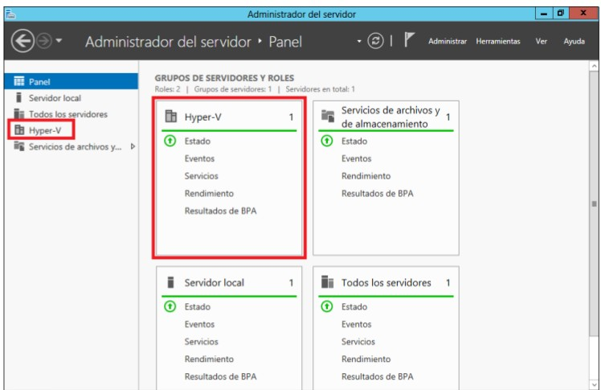
-
Para saber más: Hyper-V en Microsoft Learn · Hyper-V en Wikipedia
MV de sistema más comunes¶
- VMware (vSphere / Workstation)
- VirtualBox
- Xen (paravirtualización)
- Parallels (macOS)
- Hyper-V
Ventajas e inconvenientes¶
- ❌ Añaden complejidad en tiempo de ejecución.
- ❌ Ralentización del sistema.
- ✅ Su flexibilidad compensa esta pérdida de eficiencia.
3. Software de virtualización¶
VMware¶
- VMware Inc. (VM de Virtual Machine), filial de EMC Corporation, proporciona la mayor parte del software de virtualización para ordenadores compatibles x86.
- Productos: VMware Workstation y los gratuitos VMware Server y VMware Player.
- Funciona en Windows, Linux y macOS con procesador Intel (bajo el nombre de VMware Fusion).
- Ejemplo visto en clase: Windows Server 2012 ejecutándose sobre Linux Mint con VMware Workstation Player.
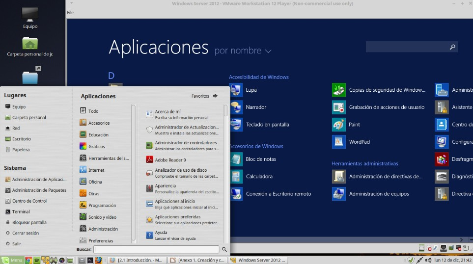
Nota actualizada
Desde finales de 2023 VMware pertenece a Broadcom. VMware Server está descontinuado y VMware Player se ha integrado en Workstation.
VirtualBox¶
- Software de virtualización de Oracle, gratuito y multiplataforma (Windows, Linux, macOS).
- Hipervisor de tipo II.
- Permite gestionar varias MV (Ubuntu, Windows XP, Solaris…) desde el VirtualBox Manager, con instantáneas (snapshots) y configuración de pantalla, almacenamiento, audio, red y USB.
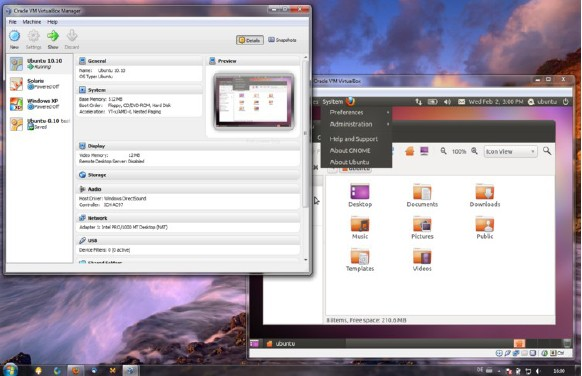
4. Virtualización en la nube¶
Ventajas e inconvenientes del Cloud¶
| ✅ Ventajas | Descripción |
|---|---|
| Elasticidad y escalabilidad | Permite aumentar los recursos de forma inmediata y sin afectar al usuario. |
| Inmediatez | Despliega sistemas que de otro modo tardarían semanas en implementarse. |
| Costes | A largo plazo, alojar los servicios virtuales en la nube es más económico. |
| Equipo operativo | No hay costes de equipos operativos: están incluidos en la suscripción. |
| Acceso | Se accede a los recursos desde cualquier sitio con Internet. |
| ❌ Inconvenientes | Descripción |
|---|---|
| Protección de datos | Los datos están expuestos a terceros; hay que revisar los acuerdos de protección de la información. |
| Independencia | Al necesitar conexión a Internet se pierde independencia de uso. |
| Costes recurrentes | Aunque a largo plazo es más barata, hay que pagar cuotas mensuales. |
| Administración | No se dispone de administración del servidor físico. |
IaaS, PaaS y SaaS¶
Son distintos niveles de servicio en el Cloud (hay más, pero estos son los más habituales):
| Modelo | Significado | Qué ofrece | Ejemplos |
|---|---|---|---|
| IaaS | Infrastructure as a Service | Uso directo de máquinas virtuales. El cliente las crea y administra desde cero, instalando todo lo que necesite. | Amazon Web Services, Azure, Google Cloud |
| PaaS | Platform as a Service | La infraestructura necesaria para crear, testear e implementar aplicaciones en la nube. | Oracle Cloud Applications, Azure, Google App Engine |
| SaaS | Software as a Service | La aplicación ya funcionando en la nube. Sin trabajo de mantenimiento. | Gmail, Facebook… (cualquier app con usuario y contraseña) |
Más control del cliente ◄──────────────────────────► Menos gestión
IaaS PaaS SaaS
(tú gestionas SO, (tú gestionas solo (solo usas la
apps y datos) tu app y datos) aplicación)
AWS, Azure y Google Cloud¶
Los tres grandes proveedores:
- AWS: Amazon Web Services
- Azure: Microsoft Azure
- Google Cloud: Google
Cuota de mercado en infraestructura cloud (Q2 2026) — Fuente: Synergy Research Group, julio 2026
| Proveedor | Cuota |
|---|---|
| AWS | 28 % |
| Microsoft Azure | 20 % |
| Google Cloud | 15 % |
| Otros | 37 % |
| Gasto total | 143,4 mil millones US$ |
Note
Los tres principales suman el 63 % del gasto total en cloud.
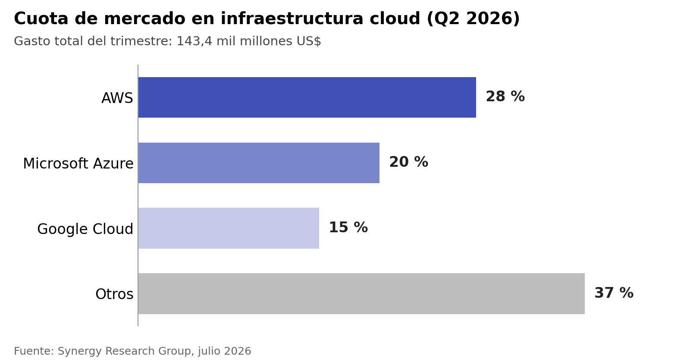
¿Cuál elegir?
- Los tres ofrecen prácticamente las mismas opciones: la elección depende de la experiencia del equipo, los precios y los distribuidores con los que se trabaje.
- Azure: destaca por su integración con Active Directory de Microsoft. Es la mejor opción para migrar un directorio a la nube, incluyendo VMware (bare metal).
- AWS: la opción más potente en virtualización IaaS, también con posibilidad de VMware (bare metal).
- Google Cloud: ofrece los precios más competitivos.
📌 Resumen / glosario¶
| Término | Definición |
|---|---|
| Máquina virtual (MV) | Software que emula el hardware de un ordenador completo. |
| Host / anfitrión | Equipo físico donde se ejecuta el software de virtualización. |
| Guest / invitado | Cada máquina virtual creada sobre el host. |
| Hipervisor | Capa de software que gestiona y reparte los recursos entre las MV. |
| Tipo I (bare metal) | Hipervisor instalado directamente sobre el hardware. |
| Tipo II (hosted) | Hipervisor que se ejecuta como una aplicación sobre un SO. |
| IaaS / PaaS / SaaS | Niveles de servicio en la nube: infraestructura, plataforma y software. |